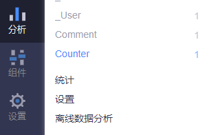

hexo留言和浏览次数功能
起篇
在名为[ 透露点消息 ]的公众号，发现一个很有意思的功能，点击阅读原文，跳转到博客页面，显示出一个留言面板。这样就实现了公众号的留言功能了，真是妙啊。
随后，在[胖子的猜想]的公众号中，作者复现了一下留言功能。这里是原文链接点击一下啦
复现
看完了文章，恰巧也有在用hexo作为自己的个人博客(next主题)，就顺带体验一下留言功能。
碰巧看到了，浏览次数这个功能，也一并开通了。
主要修改主题文件 next/_config.yml 下的两处信息。
valine: enable: true appid: appid appkey: appkey notify: true # mail notifier , https://github.com/xCss/Valine/wiki verify: false # Verification code /* .... */ leancloud_visitors: enable: true app_id: appid app_key: appkey
至此，留言功能和浏览次数的功能就实现了。
最后测试
将本文生成，打开本地服务器，进行预览与测试。最终结果在图中显示。 然后关闭此项功能， 哈哈哈
有一点值得注意，就是当我同时打开了留言功能和浏览次数功能。
在查看valine官网中发现，有[文章阅读量统计]这一栏。有这样一段文字描述
如果开启了
阅读量统计，Valine 会自动检测leancloud 应用中是否存在Counter类，如果不存在会自动创建，无需手动创建

涉及链接
听首歌吧
One night
Google广告
假装这里有广告